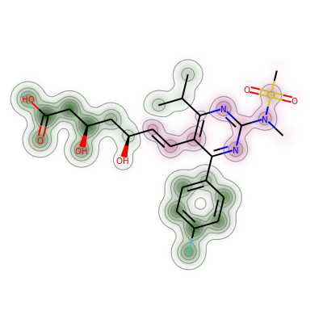
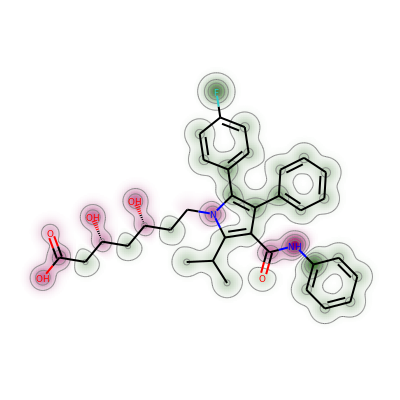

As part of the 2019.09 release we added a C++ implementation of the RDKit’s similarity map functionality (https://jcheminf.biomedcentral.com/articles/10.1186/1758-2946-5-43). I forgot to mention this during the “What’s New” bit of my presentation at the UGM, but I think it’s worth calling attention to. So here’s a quick blog post.
I start by using “classic” similarity map functionality to show why atorvastatin (Lipitor) and rosuvastatin (Crestor) are similar to each other when using the Morgan fingerprint.
To use the new drawing code, we create a Draw2D object and pass that to SimilarityMaps.GetSimilarityMapForFingerprint:
def show_png(data): bio = io.BytesIO(data) img = Image.open(bio)return img
d = Draw.MolDraw2DCairo(400, 400)_, maxWeight = SimilarityMaps.GetSimilarityMapForFingerprint(atorvastatin, rosuvastatin, lambda m, i: SimilarityMaps.GetMorganFingerprint(m, i, radius=2, fpType='bv'), draw2d=d)d.FinishDrawing()show_png(d.GetDrawingText())

We can do the same thing with count-based fingerprints:
d = Draw.MolDraw2DCairo(400, 400)_, maxWeight = SimilarityMaps.GetSimilarityMapForFingerprint(atorvastatin, rosuvastatin, lambda m, i: SimilarityMaps.GetMorganFingerprint(m, i, radius=2, fpType='count'), draw2d=d)d.FinishDrawing()show_png(d.GetDrawingText())
The other GetSimilarityMapFrom... functions also accept the optional draw2d argument. Here’s a visualization of the contributions made by the atoms in atorvastatin to its calculatied logp value:
from rdkit.Chem import rdMolDescriptorsator_contribs = rdMolDescriptors._CalcCrippenContribs(atorvastatin)d = Draw.MolDraw2DCairo(400, 400)SimilarityMaps.GetSimilarityMapFromWeights(atorvastatin,[x[0] for x in ator_contribs],draw2d=d)d.FinishDrawing()show_png(d.GetDrawingText())

And a couple more visualizations of various partial charge schemes.
Starting with Gasteiger-Marsilli charges:
from rdkit.Chem import rdPartialChargesrdPartialCharges.ComputeGasteigerCharges(atorvastatin)chgs = [x.GetDoubleProp("_GasteigerCharge") for x in atorvastatin.GetAtoms()]d = Draw.MolDraw2DCairo(400, 400)SimilarityMaps.GetSimilarityMapFromWeights(atorvastatin,chgs,draw2d=d)d.FinishDrawing()show_png(d.GetDrawingText())
And also the partial charges calculated with extended Hueckel theory (eHT) using Mulliken analysis:
The deviations aren’t huge (the printed array shows that), but the largest value is clearly the amide N.
There’s definitely a ToDo here to improve the way the negative contours are drawn so that the fact that they are being drawn with dashed lines is visible.